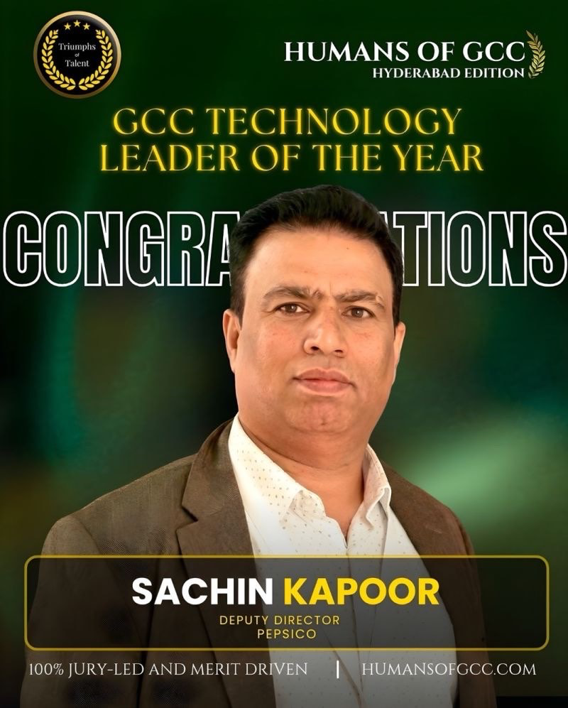
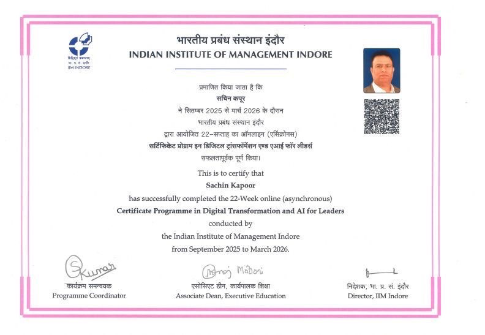

Scale
GCC ownership, governance, and leadership.
Deputy Director · Technology & Operations
I’m Sachin Kapoor, an award-winning technology and GCC leader with 18.5+ years of experience building reliable, cost-efficient, AI-enabled operating models and strategic capabilities.

Hyderabad, India
About me
I combine executive leadership with hands-on technology depth across content strategy, engineering, Microsoft cloud, SRE, DevSecOps, FinOps, ITSM, GenAI, and intelligent automation.
At PepsiCo, I lead a 25+ application portfolio and multidisciplinary teams, with a focus on accountable governance, resilient engineering, measurable service operations, and pragmatic innovation. My work connects business outcomes with the systems, practices, and people needed to sustain them.
My hands-on engineering foundation includes C#, .NET/.NET Core, ASP.NET, microservices, Azure PaaS, data-access architecture, observability, and CI/CD— experience that continues to shape how I lead architecture and delivery.
Content strategy & automation
I build the strategy and operating foundations that make enterprise content reusable, measurable, and ready for activation—then apply automation and AI to reduce friction across service operations.
Content strategy & digital experience
Defined PepsiCo’s corporate-site content strategy and led the redesign from Sitefinity to Sitecore CMS, aligning content, platforms, governance, and insight around a more connected enterprise model.
Defined the corporate-site content direction and platform modernization approach.
Established Sitecore Content Hub as the single source of truth and retired fragmented content-sharing services.
Integrated Content Hub with Sitecore and omnichannel publishing, and introduced Bynder DAM with marketing and AI tools.
Integrated TryProFound GenAI analytics, FullStory, and GA4 to strengthen digital insight.
Automation & AI-led operations
Established the ITSM operating model and built an automation portfolio spanning operational reporting, workflow orchestration, AI ticket triage, RAG-enabled support, and emerging agentic integration patterns.
Built Power Apps and Power Automate workflows for triage, approvals, notifications, SLA tracking, problem records, and reporting.
Launched Zero Hero for zero-touch reporting across MTTR, SLA breaches, FCR, incident trends, problem management, and recognition.
Delivered Kognito-based AI triage for misrouted tickets and Oscar, a RAG-enabled ServiceNow support chatbot.
Extended AI-led operations through an SRE agent, email-to-ticket automation, RAG analytics, and agentic integration patterns.
Professional experience
18.5+ years across enterprise technology, consulting, architecture, and operations.
PepsiCo GCC
Sodexo via CGI Inc. / Netlink Software Group
Career progression
Nuance Communications / Microsoft · Cognizant Technology Solutions · Regal Beloit · ValueLabs · Cyient · Venture Software and Development Solution
Company & domain experience
Leadership and engineering experience across Food & Beverage, Retail, Healthcare, and Transportation domains.
Aug 2021 — Present
Food & Beverage / Retail
Technology & Operations leadershipSep 2018 — Aug 2021
Retail Technology
Consulting, architecture & deliveryJul 2008 — Sep 2018
Engineering, architecture, and technology delivery progression
Industry domains
Skills & technologies
Microsoft engineering foundation
Led cloud-native and microservices delivery while remaining grounded in application architecture, APIs, data access, telemetry, and production engineering across Microsoft technologies.
.NET/.NET Core, .NET 5, ASP.NET MVC, ASP.NET Web API, and Azure Functions.
Web/mobile, API, domain, service, and repository layers for cloud-native solutions.
Entity Framework, ADO.NET, LINQ, stored procedures, and SQL Server.
Azure PaaS, Application Insights, Azure DevOps, and CI/CD across QA, onboarding, and production.
01
Azure, C#, .NET/.NET Core, ASP.NET MVC & Web API, Azure Functions, Azure DevOps, Power Apps, Power Automate, Power BI, Azure OpenAI, ADF, SQL Server, Application Insights
02
Power Apps, Power Automate, ITSM workflow automation, AI ticket triage, RAG-enabled self-service, email-to-ticket automation, agentic AI, LangChain, MCP, Hugging Face, Azure OpenAI, Grok, Mistral, OneReach.ai, Python, ServiceNow automation, GitHub Copilot, Windsurf
03
ServiceNow, incident, problem, change, and release management, SLAs/SLOs, FCR, MTTR, AppDynamics, Datadog, CloudWatch, TCS IGNIO, Azure Monitor, Log Analytics
04
Content strategy, content lifecycle governance, AWS, Azure PaaS, Docker, Argo CD, Flexera FinOps, Sitecore CMS/XP, Sitecore Content Hub, Sitefinity, Bynder DAM, omnichannel publishing, Apache Kafka, Angular, React/Next.js, OutSystems
05
GCC leadership, managed services, vendor governance, SOW management, SAP Fieldglass, Agile, SAFe, PI planning, DORA metrics, DevSecOps, FinOps, JIRA, Trello, Clarity
Key projects
Programs spanning digital experience, automation, AI, cloud value, and engineering excellence.
Digital experience
Defined PepsiCo’s corporate-site content strategy and led the redesign from Sitefinity to Sitecore CMS. Established Sitecore Content Hub as the source of truth, retired fragmented content-sharing services, introduced Bynder DAM, and integrated omnichannel publishing with TryProFound GenAI analytics, FullStory, and GA4.
ITSM automation
Launched proactive, zero-touch reporting with Power Automate and Power Apps across MTTR, SLA breaches, FCR, problem management, incident trends, and recognition.
AI self-service
Conceived and launched a RAG-enabled ServiceNow support chatbot for guided self-service and standardized responses, alongside Kognito-based ticket triage and other agentic operations patterns.
Cloud & FinOps
Led migrations from Akamai and other hosting environments to AWS and built FinOpsHub with Flexera-sourced cloud data and governance controls, supporting $1.2M+ in year-over-year savings.
Engineering excellence
Standardized CI/CD with automated build, test, security, approval, and deployment gates across Microsoft cloud and application platforms.
Retail platforms
Led architecture and delivery for retail experiences spanning location discovery, menu personalization, food ordering, promotions, feedback, and unit-manager operations. Delivered cloud-native and microservices solutions using .NET Core/.NET 5, C#, ASP.NET Web API, Angular, Azure PaaS, Azure Functions, SQL Server, and Azure DevOps.
Credentials & recognition
IIM Indore Executive Education Alumni
22-week online programme · September 2025 — March 2026
Certifications
TOGAF 9.2 and four Microsoft Azure certifications.
Education
NIE Bhopal · 2009
Makhan Lal Chaturvedi Patrakarita Vishwavidyalaya · 2005
Selected recognition
Featured milestones
Independent recognition for GCC technology leadership, paired with continued executive learning in digital transformation and AI.

Leadership award
Recognized by Humans of GCC, Hyderabad Edition, through the Triumphs of Talent platform as a jury-led, merit-driven leadership honor.

Executive education
Completed the 22-week online Certificate Programme in Digital Transformation and AI for Leaders, conducted by the Indian Institute of Management Indore from September 2025 to March 2026.
Contact
For professional conversations, leadership opportunities, or collaboration, connect with me on LinkedIn or send an email.